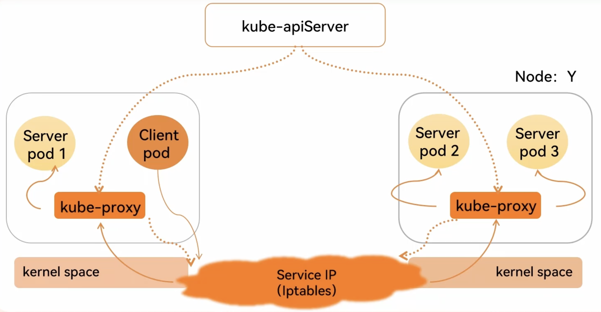

Kubernetes 解析
Pod 解析：
一、Pod 基础概念
1. 定义
在 Kubernetes（K8s）里，Pod 属于最基础且最小的可部署单元。它代表一组紧密关联的容器集合，这些容器会共享存储、网络以及运行环境。可以把 Pod 当作是运行特定应用程序的一个“逻辑主机”。
2. 设计理念
Pod 的设计是为了支持那些紧密耦合、相互协作的进程，这些进程可能会一起部署和管理。比如，一个主应用容器和一个用于日志收集的 Sidecar 容器就可以放在同一个 Pod 中。
3. 共享资源
- 网络：Pod 内的所有容器共享同一个网络命名空间，拥有相同的 IP 地址和端口空间。这意味着容器之间可以通过
localhost直接通信，极大地简化了应用内部的网络交互。 - 存储：Pod 能够定义一个或多个存储卷（Volume），这些存储卷可被 Pod 内的所有容器访问，方便实现数据的持久化或者容器间的数据共享。
二、Pod 的生命周期
1. Pending（挂起）
- 状态说明：当你创建一个 Pod 时，它首先会进入 Pending 状态。此时，Kubernetes API Server 已经接收到创建请求，但 Pod 还未被完全创建好。
- 可能原因：
- 调度器还没为 Pod 分配合适的节点。
- 容器镜像正在下载，特别是大镜像时，下载时间可能较长。
2. ContainerCreating（容器创建中）
- 状态说明：一旦 Pod 被调度到某个节点，kubelet 就会开始创建容器。
- 主要操作：
- 从镜像仓库下载容器镜像（如果本地不存在）。
- 创建容器的网络和存储等资源。
- 启动容器进程。
3. Running（运行中）
- 状态说明：当 Pod 内的所有容器都成功创建并启动后，Pod 进入 Running 状态。不过，这并不意味着应用程序一定能正常工作，还需通过健康检查来确认。
- 相关操作：此时，Pod 中的应用程序开始提供服务，并且可以接收外部流量。
4. Succeeded（成功）
- 状态说明：如果 Pod 中的所有容器都正常终止（退出码为 0），Pod 就会进入 Succeeded 状态。
- 常见场景：这种情况常见于一次性任务，比如批处理作业，任务完成后容器就会正常退出。
5. Failed（失败）
- 状态说明：若 Pod 中的任何一个容器以非零退出码终止，或者在创建、运行过程中出现错误，Pod 就会进入 Failed 状态。
- 可能原因：
- 镜像下载失败。
- 容器启动脚本出错。
- 应用程序内部错误。
6. Unknown（未知）
- 状态说明：当 kubelet 无法向 API Server 汇报 Pod 的状态时，Pod 会处于 Unknown 状态。
- 可能原因：通常是由于节点与 API Server 之间的网络问题，或者 kubelet 进程崩溃导致。
7. 生命周期钩子（Lifecycle Hooks）
Kubernetes 允许为 Pod 中的容器定义生命周期钩子，这些钩子会在容器的特定阶段执行。
- postStart：容器启动后立即执行的操作，可用于初始化工作，例如创建必要的文件或目录。
- preStop：容器终止前执行的操作，可用于优雅关闭应用程序，比如保存数据、释放资源等。
以下是包含生命周期钩子的 Pod 示例：
apiVersion: v1
kind: Pod
metadata:
name: lifecycle-hook-pod
spec:
containers:
- name: my-container
image: nginx:1.14.2
lifecycle:
postStart:
exec:
command:
["/bin/sh", "-c", "echo 'Container started' > /tmp/start.log"]
preStop:
exec:
command: ["/usr/sbin/nginx", "-s", "quit"]
8. 健康检查（Probes）
为了确保 Pod 中的应用程序正常运行，Kubernetes 提供了健康检查机制，主要有两种类型的探针：
- 存活探针（Liveness Probe）：用于检测容器是否存活。如果存活探针失败，Kubernetes 会重启容器。
- 就绪探针（Readiness Probe）：用于检测容器是否准备好接收流量。如果就绪探针失败，Kubernetes 会将该 Pod 从服务的负载均衡中移除。
以下是包含健康检查的 Pod 示例：
apiVersion: v1
kind: Pod
metadata:
name: probe-pod
spec:
containers:
- name: my-container
image: nginx:1.14.2
ports:
- containerPort: 80
livenessProbe:
httpGet:
path: /healthz
port: 80
initialDelaySeconds: 15
periodSeconds: 5
readinessProbe:
httpGet:
path: /ready
port: 80
initialDelaySeconds: 5
periodSeconds: 10
三、Pod 的调度
1. 调度器的作用
Kubernetes 中的调度器（Scheduler）负责将 Pod 分配到合适的节点上运行。调度器会综合考虑节点的资源状况、Pod 的资源请求以及各种调度策略来做出决策。
2. 调度过程
预选阶段（Predicate）
调度器会根据一系列规则过滤掉不满足条件的节点，主要规则如下：
- 资源检查：检查节点的可用 CPU、内存等资源是否满足 Pod 的请求。如果节点资源不足，该节点会被排除。
- 节点选择器（NodeSelector）：如果 Pod 定义了
nodeSelector，调度器会只考虑带有相应标签的节点。 - 节点亲和性与反亲和性（Node Affinity and Anti - Affinity）：可以定义 Pod 与节点之间的亲和或反亲和关系。例如，要求 Pod 必须调度到特定区域的节点上，或者避免调度到某些节点上。
- 污点与容忍度（Taints and Tolerations）：节点可以设置污点，防止某些 Pod 被调度到该节点上；而 Pod 可以设置容忍度，表示它可以容忍哪些污点。
优选阶段（Priority）
在通过预选的节点中，调度器会对每个节点进行打分，选择得分最高的节点。打分的依据有很多，例如：
- 节点负载情况：优先选择负载较低的节点，以保证 Pod 能稳定运行。
- 与其他 Pod 的亲和性：为了提高性能或实现高可用，可能会优先选择与其他相关 Pod 在同一节点或不同节点的节点。
3. 调度策略示例
节点选择器
apiVersion: v1
kind: Pod
metadata:
name: node-selector-pod
spec:
containers:
- name: my-container
image: nginx:1.14.2
nodeSelector:
disktype: ssd
上述示例中，Pod 会被调度到带有 disktype: ssd 标签的节点上。
节点亲和性
apiVersion: v1
kind: Pod
metadata:
name: node-affinity-pod
spec:
containers:
- name: my-container
image: nginx:1.14.2
affinity:
nodeAffinity:
requiredDuringSchedulingIgnoredDuringExecution:
nodeSelectorTerms:
- matchExpressions:
- key: region
operator: In
values:
- us-west
此示例中，Pod 必须被调度到带有 region: us-west 标签的节点上。
污点与容忍度
apiVersion: v1
kind: Pod
metadata:
name: taint-toleration-pod
spec:
containers:
- name: my-container
image: nginx:1.14.2
tolerations:
- key: "dedicated"
operator: "Equal"
value: "special-user"
effect: "NoSchedule"
该 Pod 可以容忍带有 dedicated: special-user 污点且效果为 NoSchedule 的节点。
4. 调度失败处理
如果调度器无法为 Pod 找到合适的节点，Pod 会一直处于 Pending 状态。可以通过查看 kubectl describe pod <pod-name> 的输出信息来定位调度失败的原因，常见原因包括节点资源不足、节点标签不匹配等。
四、总结
Pod 作为 Kubernetes 中最核心的概念之一，其生命周期和调度机制对于有效管理和运行容器化应用程序起着至关重要的作用。通过合理配置 Pod 的生命周期钩子、健康检查和调度策略，能够显著提高应用程序的可用性和性能。同时，深入理解 Pod 的相关知识，有助于更好地应对 Kubernetes 集群中的各种场景和问题。
Controller 解析：
一、Controller 概述
在 Kubernetes 中，控制器（Controller）是一个核心概念，它是一种控制循环，通过持续监控 Kubernetes API 服务器中的对象状态，并根据期望状态与实际状态的差异采取相应的操作，以确保系统始终处于用户所期望的状态。控制器不断地比较期望状态和实际状态，然后对资源进行创建、更新或删除操作，使实际状态逐渐趋近于期望状态。
二、常见控制器详细解析
1.Deployment
1.1 功能作用
Deployment 是 Kubernetes 中用于管理无状态应用的工作负载资源。它主要用于定义 Pod 的模板，控制 Pod 的副本数量，支持滚动更新、回滚、扩缩容等操作，从而确保应用的高可用性和可扩展性。通过 Deployment，你可以方便地对应用进行版本管理和更新，而无需手动管理每个 Pod。
1.2 创建的资源清单示例
apiVersion: apps/v1 #版本号
kind: Deployment #类型
metadata: #元数据
name: #rs名称
namespace: #所属命名空间
labels: #标签
controller: deploy
spec: #详情描述
replicas: #副本数量
revisionHistoryLimit: #保留历史版本，默认是10
paused: #暂停部署，默认是false
progressDeadlineSeconds: #部署超时时间(s)，默认是600
strategy: #策略
type: RollingUpdates #滚动更新策略
rollingUpdate: #滚动更新
maxSurge: #最大额外可以存在的副本数，可以为百分比，也可以为整数
maxUnavaliable: #最大不可用状态的pod的最大值，可以为百分比，也可以为整数
selector: #选择器，通过它指定该控制器管理哪些pod
matchLabels: #Labels匹配规则
app: nginx-pod
matchExpressions: #Expression匹配规则
- { key: app, operator: In, values: [nginx-pod] }
template: #模板，当副本数量不足时，会根据下面的模板创建pod副本
metadata:
labels:
app: nginx-pod
spec:
containers:
- name: nginx
image: nginx:1.17.1
ports:
- containerPort: 80
apiVersion：指定使用的 Kubernetes API 版本。kind：指定资源类型为 Deployment。metadata：包含 Deployment 的名称和标签等元数据。spec.replicas：指定要创建的 Pod 副本数量。spec.selector：用于选择要管理的 Pod，通过标签匹配。spec.template：定义 Pod 的模板，包含 Pod 的元数据和容器配置。
1.3 底层架构逻辑

- Deployment 通过创建和管理 ReplicaSet 来间接管理 Pod。每个 Deployment 可以有多个 ReplicaSet，但只有一个是活跃的，用于维持当前的 Pod 副本数量。
- 当你更新 Deployment 时，会创建一个新的 ReplicaSet，新的 ReplicaSet 会逐渐创建新的 Pod，同时旧的 ReplicaSet 会逐渐减少旧 Pod 的数量，实现滚动更新。
1.4 扩缩容
-
方式一：命令行
-
命令
kubectl scale deploy deploy名称 --replicas=pod数量 -n 命名空间通过命令行变更 pod 数量为 5 个
[root@master ~]# kubectl scale deploy pc-deployment --replicas=5 -n dev deployment.apps/pc-deployment scaled [root@master ~]# kubectl get pod -n dev NAME READY STATUS RESTARTS AGE pc-deployment-5d89bdfbf9-bhcns 1/1 Running 0 83s pc-deployment-5d89bdfbf9-cfls7 1/1 Running 0 83s pc-deployment-5d89bdfbf9-k8j9n 1/1 Running 0 8m54s pc-deployment-5d89bdfbf9-vw87k 1/1 Running 0 8m54s pc-deployment-5d89bdfbf9-x7nsm 1/1 Running 0 8m54s
-
-
方式二：资源清单
-
命令
kubectl edit deploy deploy名字 -n 命名空间通过编辑 deploy 文件编辑 pod 数量为 3 个
[root@master ~]# kubectl edit deploy pc-deployment -n dev 找到replicas，将其数量改为3 spec: progressDeadlineSeconds: 600 replicas: 3 [root@master ~]# kubectl get pod -n dev NAME READY STATUS RESTARTS AGE pc-deployment-5d89bdfbf9-k8j9n 1/1 Running 0 15m pc-deployment-5d89bdfbf9-vw87k 1/1 Running 0 15m pc-deployment-5d89bdfbf9-x7nsm 1/1 Running 0 15m
-
1.5 镜像更新
deployment 支持两种镜像更新策略：重建更新和滚动更新（默认），可以通过 strategy 选项进行配置
strategy：指定新的pod替换旧的pod的策略，支持两个属性：
type：指定策略类型，支持两种策略
Recreate：在创建出新的pod之前会先杀掉所有已存在的pod
RollingUpdate：滚动更新，就是杀死一部分，就启动一部分，在更新过程中，存在两个版本pod
rollingUpdate：当type为RollingUpdate时生效，用于为RollingUpdate设置参数，支持两个属性
maxUnavailable：用来指定在升级过程中不可用pod的最大数量，默认为25%
maxSurge：用来指定在升级过程中可以超过期望的pod的最大数量，默认为25%
-
重建更新
编辑 pc-deployment.yaml，在 spec 节点下添加更新策略
spec: strategy: #策略 type: Recreate #重建更新策略[root@master ~]# vim pc-deployment.yaml [root@master ~]# kubectl apply -f pc-deployment.yaml Warning: kubectl apply should be used on resource created by either kubectl create --save-config or kubectl apply deployment.apps/pc-deployment configured创建 deploy 进行验证
#首先记录原本的pod名 [root@master ~]# kubectl get pod -n dev NAME READY STATUS RESTARTS AGE pc-deployment-5d89bdfbf9-bqf86 1/1 Running 0 8s pc-deployment-5d89bdfbf9-kz6jt 1/1 Running 0 8s pc-deployment-5d89bdfbf9-z7d9z 1/1 Running 0 8s #更改pod镜像 [root@master ~]# kubectl set image deploy pc-deployment nginx=nginx:1.17.2 -n dev deployment.apps/pc-deployment image updated #再次查看镜像 [root@master ~]# kubectl get pod -n dev NAME READY STATUS RESTARTS AGE pc-deployment-675d469f8b-b9rwd 1/1 Running 0 27s pc-deployment-675d469f8b-kc7rr 1/1 Running 0 27s pc-deployment-675d469f8b-kxgkq 1/1 Running 0 27s发现 pod 镜像已经改变了
-
滚动更新
编辑 pc-deployment.yaml，在 spec 节点下添加滚动更新策略（也可以把 strategy 去掉，因为默认滚动更新策略
strategy: type: RollingUpdate #滚动更新策略 rollingUpdate: maxUnavailable: 25% maxSurge: 25%[root@master ~]# vim pc-deployment.yaml [root@master ~]# kubectl apply -f pc-deployment.yaml Warning: kubectl apply should be used on resource created by either kubectl create --save-config or kubectl apply deployment.apps/pc-deployment configured创建 deploy 进行验证
#记录以前的pod [root@master ~]# kubectl get pod -n dev NAME READY STATUS RESTARTS AGE pc-deployment-5d89bdfbf9-526wf 1/1 Running 0 61s pc-deployment-5d89bdfbf9-b5x5v 1/1 Running 0 64s pc-deployment-5d89bdfbf9-kc7hb 1/1 Running 0 59s #更新镜像 [root@master ~]# kubectl set image deploy pc-deployment nginx=nginx:1.17.2 -n dev deployment.apps/pc-deployment image updated #查看pod状态 [root@master ~]# kubectl get pod -n dev NAME READY STATUS RESTARTS AGE pc-deployment-5d89bdfbf9-526wf 0/1 Terminating 0 2m2s pc-deployment-5d89bdfbf9-b5x5v 1/1 Running 0 2m5s pc-deployment-5d89bdfbf9-kc7hb 0/1 Terminating 0 2m pc-deployment-675d469f8b-7vw6x 1/1 Running 0 3s pc-deployment-675d469f8b-rzq82 0/1 ContainerCreating 0 2s pc-deployment-675d469f8b-zk4fs 1/1 Running 0 5s [root@master ~]# kubectl get pod -n dev NAME READY STATUS RESTARTS AGE pc-deployment-675d469f8b-7vw6x 1/1 Running 0 38s pc-deployment-675d469f8b-rzq82 1/1 Running 0 37s pc-deployment-675d469f8b-zk4fs 1/1 Running 0 40s发现 pod 是旧的一遍停止新的一边创建，最后全变成了新的
滚动更新的过程
1.6 版本回退
deployment 支持版本升级过程中的暂停，继续功能以及版本回退等诸多功能，下面具体来看
kubectl rollout：版本升级相关功能，支持下面的选项：
- status：显示当前升级状态
- history：显示升级历史记录
- pause：暂停版本升级过程
- resume：继续已经暂停的版本升级过程
- restart：重启版本升级过程
- undo：回滚到上一级版本（可以使用–to-revision 回滚到指定版本
#查看升级状态
[root@master ~]# kubectl rollout status deploy pc-deployment -n dev
deployment "pc-deployment" successfully rolled out
#查看升级历史（注意：如果只显示版本号说明一开始使用yaml创建文件的时候没有加上--record命令）
[root@master ~]# kubectl rollout history deploy pc-deployment -n dev
deployment.apps/pc-deployment
REVISION CHANGE-CAUSE
1 kubectl create --filename=pc-deployment.yaml --record=true
2 kubectl create --filename=pc-deployment.yaml --record=true
#版本回滚
#这里使用--to-revision=1回滚到1版本，如果省略这个选项，则会回退到上个版本
[root@master ~]# kubectl rollout undo deploy pc-deployment --to-revision=1 -n dev
deployment.apps/pc-deployment rolled back
#查看是否回滚成功，发现5序号开头的rs被启动了
[root@master ~]# kubectl get rs -n dev
NAME DESIRED CURRENT READY AGE
pc-deployment-5d89bdfbf9 3 3 3 31m
pc-deployment-675d469f8b 0 0 0 22m
1.7 金丝雀发布
deployment 支持更新过程中的控制，如"暂停（pause）“或"继续（resume）“更新操作
比如有一批新的 pod 资源创建完成后立即暂停更新过程，此时，仅存在一部分新版本的应用，主体部分还是旧的版本。然后，再筛选一小部分的用户请求路由到新的 pod 应用，继续观察能否稳定地按期望的方式运行。确定没问题之后再继续完成余下的 pod 资源滚动更新，否则立即回滚更新操作。这就是所谓的金丝雀发布。
#更新deployment版本，并配置暂停deployment
[root@master ~]# kubectl set image deploy pc-deployment nginx=nginx:1.17.2 -n dev && kubectl rollout pause deploy pc-deployment -n dev
deployment.apps/pc-deployment image updated
deployment.apps/pc-deployment paused
#查看rs，发现老版本rs没有减少，新版本rs增加一个
[root@master ~]# kubectl get rs -n dev
NAME DESIRED CURRENT READY AGE
pc-deployment-5d89bdfbf9 3 3 3 44m
pc-deployment-675d469f8b 1 1 1 35m
#在窗口2中查看deploy状态，发现deploy正在等待更新且已经有1个更新好了
[root@master ~]# kubectl rollout status deploy pc-deployment -n dev
Waiting for deployment "pc-deployment" rollout to finish: 1 out of 3 new replicas have been updated...
#在窗口1中继续deploy的更新
[root@master ~]# kubectl rollout resume deploy pc-deployment -n dev
deployment.apps/pc-deployment resumed
#查看窗口2的状态
Waiting for deployment spec update to be observed...
Waiting for deployment spec update to be observed...
Waiting for deployment "pc-deployment" rollout to finish: 1 out of 3 new replicas have been updated...
Waiting for deployment "pc-deployment" rollout to finish: 1 out of 3 new replicas have been updated...
Waiting for deployment "pc-deployment" rollout to finish: 2 out of 3 new replicas have been updated...
Waiting for deployment "pc-deployment" rollout to finish: 2 out of 3 new replicas have been updated...
Waiting for deployment "pc-deployment" rollout to finish: 2 out of 3 new replicas have been updated...
Waiting for deployment "pc-deployment" rollout to finish: 1 old replicas are pending termination...
Waiting for deployment "pc-deployment" rollout to finish: 1 old replicas are pending termination...
deployment "pc-deployment" successfully rolled out
#在窗口1查看rs更新结果，发现老版本均停止，新版本已经创建好
[root@master ~]# kubectl get rs -n dev
NAME DESIRED CURRENT READY AGE
pc-deployment-5d89bdfbf9 0 0 0 49m
pc-deployment-675d469f8b 3 3 3 40m
2. ReplicaSet
2.1 功能作用
ReplicaSet 的主要功能是确保在任何时候都有指定数量的 Pod 副本处于运行状态。它是 Deployment 实现滚动更新的基础，Deployment 通过创建和管理 ReplicaSet 来间接管理 Pod。当 Pod 因为各种原因（如节点故障、容器崩溃等）终止时，ReplicaSet 会自动创建新的 Pod 来替换它们。
2.2 创建的资源清单示例
apiVersion: apps/v1
kind: ReplicaSet
metadata:
name: nginx-replicaset
labels:
app: nginx
spec:
replicas: 3
selector:
matchLabels:
app: nginx
template:
metadata:
labels:
app: nginx
spec:
containers:
- name: nginx
image: nginx:1.14.2
ports:
- containerPort: 80
- 与 Deployment 的资源清单类似，
spec.replicas定义了 Pod 的副本数量，spec.selector用于选择要管理的 Pod，spec.template定义了 Pod 的模板。
2.3 底层架构逻辑
- ReplicaSet 直接管理一组 Pod，通过
selector来识别和管理与指定标签匹配的 Pod。当实际的 Pod 数量与replicas指定的数量不一致时，ReplicaSet 会创建或删除 Pod 以达到期望的数量。
2.4 scale 水平扩展的数量
kubectl scale rs nginx --replicas=2
kubectl get rs
kubectl scale rs nginx --replicas=5
kubectl get pods -o wide
3. StatefulSet
3.1 功能作用
StatefulSet 用于管理有状态的应用，如数据库、分布式系统等。与 Deployment 管理的无状态应用不同，StatefulSet 为每个 Pod 提供稳定的网络标识（如唯一的 DNS 名称）和持久化存储。这使得 Pod 在重启、迁移或扩展时能够保留其状态，确保应用的一致性和可靠性。
3.2 创建的资源清单示例
apiVersion: apps/v1
kind: StatefulSet
metadata:
name: mysql-statefulset
spec:
serviceName: "mysql-service"
replicas: 3
selector:
matchLabels:
app: mysql
template:
metadata:
labels:
app: mysql
spec:
containers:
- name: mysql
image: mysql:8.0
ports:
- containerPort: 3306
volumeMounts:
- name: mysql-persistent-storage
mountPath: /var/lib/mysql
volumeClaimTemplates:
- metadata:
name: mysql-persistent-storage
spec:
accessModes: ["ReadWriteOnce"]
resources:
requests:
storage: 1Gi
spec.serviceName：指定与 StatefulSet 关联的服务名称，用于为 Pod 提供稳定的网络标识。spec.volumeClaimTemplates：定义持久卷声明模板，为每个 Pod 创建一个持久卷。
3.3 底层架构逻辑
+----------------------+
| StatefulSet |
+----------------------+
|
v
+----------------------+
| mysql-statefulset-0 |
+----------------------+
| mysql-statefulset-1 |
+----------------------+
| mysql-statefulset-2 |
+----------------------+
|
v
+----------------------+
| Persistent Volume 0 |
+----------------------+
| Persistent Volume 1 |
+----------------------+
| Persistent Volume 2 |
+----------------------+
- StatefulSet 为每个 Pod 分配一个唯一的序号，从 0 开始递增。Pod 的名称格式为
{statefulset-name}-{ordinal}，例如mysql-statefulset-0。 - 每个 Pod 都有一个独立的持久卷声明（PVC），用于挂载持久化存储，确保数据的持久化。
3.4 滚动升级原理
StatefulSet 的滚动升级与 Deployment 类似，但有一些额外的考虑。当进行滚动升级时，StatefulSet 会按照序号从大到小的顺序依次更新 Pod，并且在更新每个 Pod 之前会等待前一个 Pod 成功更新并就绪。这确保了应用的状态在升级过程中保持一致。
4. DaemonSet
4.1 功能作用
DaemonSet 确保在集群中的每个节点（或满足特定条件的节点）上都运行一个 Pod 副本。常用于系统级的守护进程，如日志收集器、监控代理等。当有新节点加入集群时，DaemonSet 会自动在该节点上创建一个新的 Pod；当节点从集群中移除时，对应的 Pod 会被自动删除。
4.2 创建的资源清单示例
apiVersion: apps/v1
kind: DaemonSet
metadata:
name: fluentd-daemonset
labels:
app: fluentd
spec:
selector:
matchLabels:
app: fluentd
template:
metadata:
labels:
app: fluentd
spec:
containers:
- name: fluentd
image: fluentd:v1.14
volumeMounts:
- name: varlog
mountPath: /var/log
volumes:
- name: varlog
hostPath:
path: /var/log
- 通过
hostPath卷将节点的/var/log目录挂载到 Pod 中，方便收集节点的日志。
4.3 底层架构逻辑
+----------------------+
| DaemonSet |
+----------------------+
|
v
+----------------------+
| Node 1: Pod 1 |
+----------------------+
| Node 2: Pod 2 |
+----------------------+
| Node 3: Pod 3 |
+----------------------+
- DaemonSet 会在每个符合条件的节点上创建一个 Pod 副本，确保每个节点都有特定的服务在运行。
5. Job
5.1 功能作用
Job 用于运行一次性任务，当任务完成后，Pod 会终止。常用于批处理作业、数据迁移、脚本执行等场景。Job 会创建一个或多个 Pod 来执行任务，当所有 Pod 都成功完成任务后，Job 被标记为完成。
5.2 创建的资源清单示例
apiVersion: batch/v1
kind: Job
metadata:
name: pi-job
spec:
template:
spec:
containers:
- name: pi
image: perl:5.34.0
command: ["perl", "-Mbignum=bpi", "-wle", "print bpi(2000)"]
restartPolicy: Never
backoffLimit: 4
restartPolicy: Never表示当 Pod 失败时，不会自动重启。backoffLimit指定了任务失败后的重试次数。
5.3 底层架构逻辑
+----------------------+
| Job |
+----------------------+
|
v
+----------------------+
| Pod 1 |
+----------------------+
- Job 创建一个或多个 Pod 来执行任务，当所有 Pod 都成功完成任务后，Job 结束。
6. CronJob
6.1 功能作用
CronJob 是基于时间的 Job，它按照指定的时间间隔周期性地运行任务，类似于 Linux 系统中的 cron 任务。CronJob 会根据 schedule 字段指定的时间间隔创建 Job，每个 Job 会按照 Job 的规则创建 Pod 来执行任务。
6.2 创建的资源清单示例
apiVersion: batch/v1
kind: CronJob
metadata:
name: hello-cronjob
spec:
schedule: "*/1 * * * *"
jobTemplate:
spec:
template:
spec:
containers:
- name: hello
image: busybox:1.36
args:
- /bin/sh
- -c
- date; echo Hello from the Kubernetes cluster
restartPolicy: OnFailure
schedule使用 Cron 表达式指定任务的调度时间，这里表示每分钟执行一次。
6.3 底层架构逻辑
+----------------------+
| CronJob |
+----------------------+
|
v
+----------------------+
| Job 1 |
+----------------------+
| Job 2 |
+----------------------+
| ... |
+----------------------+
|
v
+----------------------+
| Pod 1 |
+----------------------+
| Pod 2 |
+----------------------+
| ... |
+----------------------+
- CronJob 按照时间间隔创建 Job，每个 Job 再创建 Pod 来执行任务。
三、总结
Kubernetes 的控制器为不同类型的应用和任务提供了强大的管理能力。通过合理使用这些控制器，可以确保应用的高可用性、可扩展性和数据的持久性。在实际应用中，需要根据具体需求选择合适的控制器，并深入理解其工作原理和使用方法，以充分发挥 Kubernetes 的优势。
Service:
一、Service概念
Kubernetes Service定义了这样一种抽象：逻辑上的一组 Pod，一种可以访问它们的策略 —— 通常被称为微服务。这一组 Pod 能够被 Service 访问到，通常是通过 selector实现的。
举例：考虑一个图片处理 backend，它运行了3个副本。这些副本是可互换的 —— frontend 不需要关心它们调用了哪个 backend 副本。 然而组成这一组 backend 程序的 Pod 实际上可能会发生变化，frontend 客户端不应该也没必要知道，而且也不需要跟踪这一组 backend 的状态。Service 定义的抽象能够解耦这种关联。
Service可以提供负载均衡的能力，但是使用上存在如下限制：
- 只能提供4层负载均衡能力，而没有7层功能。有时我们可能需要更多的匹配规则来转发请求，这点上4层负载均衡是不支持的、
如web访问的service服务示例图：

二、VIP和Service代理
在 Kubernetes 集群中，每个 Node 运行一个 kube-proxy 进程。kube-proxy负责为 Service 实现了一种 VIP（虚拟 IP）的形式，而不是 ExternalName 的形式。
从Kubernetes v1.0开始，已经可以使用 userspace代理模式。Kubernetes v1.1添加了 iptables 代理模式，在 Kubernetes v1.2 中kube-proxy 的 iptables 模式成为默认设置。Kubernetes v1.8添加了 ipvs 代理模式。
为什么不使用 DNS 轮询？
原因如下：
- DNS 实现的历史由来已久，它不遵守记录 TTL，并且在名称查找到结果后会对其进行缓存。
- 有些应用程序仅执行一次 DNS 查找，并无限期地缓存结果。
- 即使应用和库进行了适当的重新解析，DNS 记录上的 TTL 值低或为零也可能会给 DNS 带来高负载，从而使管理变得困难。
总之就是因为有缓存，因此不合适。
1. Userspace代理模式
这种模式，kube-proxy 会监视 Kubernetes master 对 Service 对象和 Endpoints 对象的添加和移除。 对每个 Service，它会在本地 Node 上打开一个端口（随机选择）。 任何连接到“代理端口”的请求，都会被代理到 Service 的backend Pods 中的某个上面（如 Endpoints 所报告的一样）。 使用哪个 backend Pod，是 kube-proxy 基于 SessionAffinity 来确定的。
最后，它配置 iptables 规则，捕获到达该 Service 的 clusterIP（是虚拟 IP）和 Port 的请求，并重定向到代理端口，代理端口再代理请求到 backend Pod。
默认情况下，userspace模式下的kube-proxy通过循环算法选择后端。
默认的策略是，通过 round-robin 算法来选择 backend Pod。

2. iptables代理模式
这种模式，kube-proxy 会监视 Kubernetes 控制节点对 Service 对象和 Endpoints 对象的添加和移除。 对每个 Service，它会配置 iptables 规则，从而捕获到达该 Service 的 clusterIP 和端口的请求，进而将请求重定向到 Service 的一组 backend 中的某个上面。对于每个 Endpoints 对象，它也会配置 iptables 规则，这个规则会选择一个 backend 组合。
默认的策略是，kube-proxy 在 iptables 模式下随机选择一个 backend。
使用 iptables 处理流量具有较低的系统开销，因为流量由 Linux netfilter 处理，而无需在用户空间和内核空间之间切换。 这种方法也可能更可靠。
如果 kube-proxy 在 iptables模式下运行，并且所选的第一个 Pod 没有响应，则连接失败。 这与userspace模式不同：在这种情况下，kube-proxy 将检测到与第一个 Pod 的连接已失败，并会自动使用其他后端 Pod 重试。
我们可以使用 Pod readiness 探测器 验证后端 Pod 是否可以正常工作，以便 iptables 模式下的 kube-proxy 仅看到测试正常的后端。这样做意味着可以避免将流量通过 kube-proxy 发送到已知已失败的Pod。

3. ipvs代理模式
在 ipvs 模式下，kube-proxy监视Kubernetes服务(Service)和端点(Endpoints)，调用 netlink 接口相应地创建 IPVS 规则， 并定期将 IPVS 规则与 Kubernetes服务(Service)和端点(Endpoints)同步。该控制循环可确保 IPVS 状态与所需状态匹配。访问服务(Service)时，IPVS 将流量定向到后端Pod之一。
IPVS代理模式基于类似于 iptables 模式的 netfilter 挂钩函数，但是使用哈希表作为基础数据结构，并且在内核空间中工作。 这意味着，与 iptables 模式下的 kube-proxy 相比，IPVS 模式下的 kube-proxy 重定向通信的延迟要短，并且在同步代理规则时具有更好的性能。与其他代理模式相比，IPVS 模式还支持更高的网络流量吞吐量。
IPVS提供了更多选项来平衡后端Pod的流量。这些是：
- rr: round-robin
- lc: least connection (smallest number of open connections)
- dh: destination hashing
- sh: source hashing
- sed: shortest expected delay
- nq: never queue
注意：要在 IPVS 模式下运行 kube-proxy，必须在启动 kube-proxy 之前使 IPVS Linux 在节点上可用。 当 kube-proxy 以 IPVS 代理模式启动时，它将验证 IPVS 内核模块是否可用。 如果未检测到 IPVS 内核模块，则 kube-proxy 将退回到以 iptables 代理模式运行。

三、Service类型
Kubernetes 中Service有以下4中类型：
ClusterIP：默认类型，自动分配一个仅Cluster内部可以访问的虚拟IPNodePort：通过每个 Node 上的 IP 和静态端口（NodePort）暴露服务。以ClusterIP为基础，NodePort 服务会路由到 ClusterIP 服务。通过请求<NodeIP>:<NodePort>，可以从集群的外部访问一个集群内部的 NodePort 服务。LoadBalancer：使用云提供商的负载均衡器，可以向外部暴露服务。外部的负载均衡器可以路由到 NodePort 服务和 ClusterIP 服务。ExternalName：通过返回 CNAME 和它的值，可以将服务映射到 externalName 字段的内容（例如，foo.bar.example.com）。没有任何类型代理被创建。
需要注意的是：Service 能够将一个接收 port 映射到任意的 targetPort。默认情况下，targetPort 将被设置为与 port 字段相同的值。
Service域名格式：$(service name).$(namespace).svc.cluster.local，其中 cluster.local 为指定的集群的域名